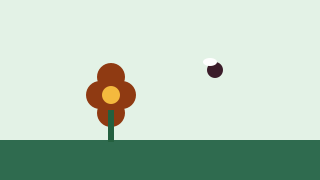

First sampling at Parco del Valentino
In one morning we counted 14 different species of wild bees.
A map of wild bees and other pollinators in ten city parks.
UrbanBees group · Department of Life Sciences and Systems Biology, University of Turin
Principal investigator: Francesca Allasia

Cities are home to more than honeybees: dozens of wild bee species, hoverflies and butterflies pollinate plants and gardens.
The UrbanBees group will sample pollinators in ten Turin parks for a year and compare the data with temperature and lawn type. With the results we will suggest simple ways for the City to manage green spaces that help pollinators.
We are also looking for volunteers for weekend observations.
| Budget item | Amount |
|---|---|
| Traps and sampling material | €1,800 |
| Species identification in the lab | €2,600 |
| Weather sensors for the 10 parks | €1,600 |
| Online map and public meetings | €1,000 |
| Total (goal) | €7,000 |
Choose a reward or a free donation. The amounts shown are minimums: you can always give more.
In one morning we counted 14 different species of wild bees.
Comments are published in the language they were written in.
Martina A. · · Comment in Italian
Posso fare la volontaria il sabato? Abito vicino alla Pellerina.
Some of the supporters who chose to show their name:
Fabio D., Martina A., Paolo F., Chiara N., Giorgio E., Luisa C., Davide S., Valentina R. and 56 more people, some anonymous.
Dates of ongoing campaigns are for demonstration: they are calculated from today.